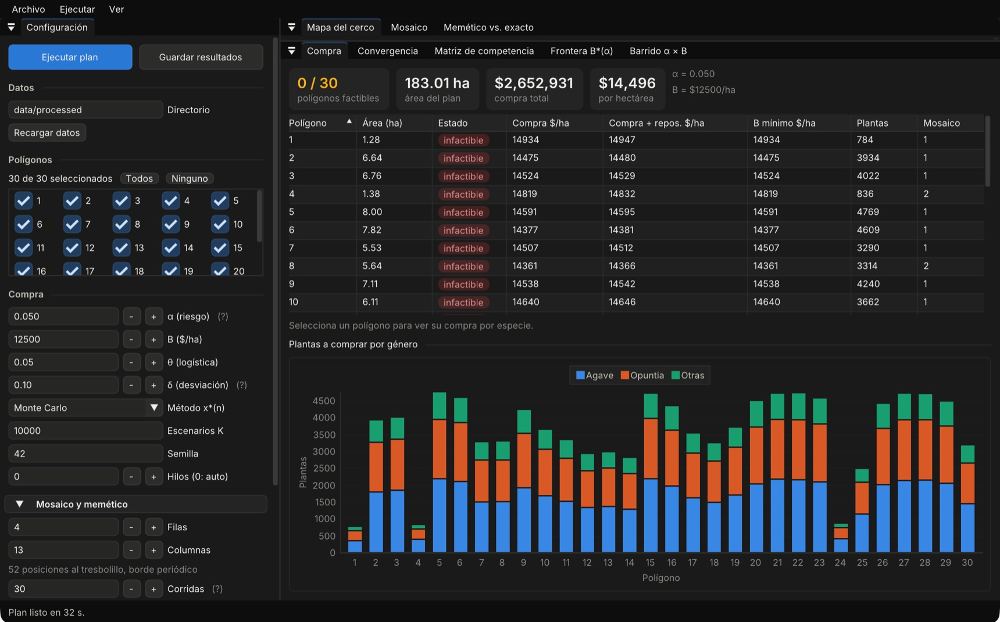

Procesos estocásticos y metaheurísticos en la modelación de una iniciativa de reforestación
Compra bajo incertidumbre y distribución espacial para reforestar la Línea de Transmisión Dominica–Charcas, San Luis Potosí
Clave de plantación de cada polígono, por género
- Agave
- Opuntia
- Otras: mezquite y yuca
30 polígonos · 183 ha · 10 especies nativas · meta de 658 plantas/ha
Angel Eduardo-Luna · Irasema Alvarez
Carolina Sánchez Meneses · Andrea Estefanía de la Peña
Tecnológico de Monterrey · MA2004B, grupo 202, equipo 5
Para CONAFOR · octubre de 2026
Con $12,500 por hectárea no alcanza para ningún polígono
Presupuesto mínimo para cumplir la meta con 95 % de probabilidad, por hectárea
Fuente: INECOL; modelo refor, α = 0.05, θ = 0.05, δ = 0.10, K = 10,000, semilla 42.
30 polígonos, 183 hectáreas
Línea de Transmisión Dominica–Charcas, en San Luis Potosí. Matorral desértico rosetófilo y micrófilo, deteriorado por el sobrepastoreo.
- Polígonos de 1.28 a 8 hectáreas.
- Diez especies nativas: agaves, nopales, mezquite y yuca.
- Meta de 658 plantas por hectárea, al tresbolillo por los vientos fuertes de la zona.
Pase el cursor por un polígono para ver sus datos.
Fuente: INECOL. Contornos digitalizados a mano (±5 m): sirven para ubicar, no para deslindar. Números: ID del programa.
¿Cuántas plantas comprar de cada especie, y dónde va cada una?
Dibujos provisionales del equipo. q: supervivencia; c: costo por planta. Fuente: INECOL.
Lo que no sabemos de antemano
Cuántas sobreviven
Cada especie tiene su tasa de supervivencia q. De 100 mezquites plantados sobreviven entre 76 y 88 en 9 de cada 10 lotes.Cuántas ya hay
Banda: 90 % de lo que sobrevive en un lote de 100 plantas, Bin(100, q). Plantas existentes en el polígono 1: conteos de INECOL; su ubicación en el mapa es ilustrativa. La competencia entre especies (matriz W) es una estimación por validar en campo.
Cómo lo resolvimos: de los datos a la clave de plantación
La clave de plantación
Cada hoja es una planta con sus seis vecinas. El memético acomoda las especies para que compitan poco.
Una compra por polígono
Una rama por polígono; los que piden la misma composición comparten clave.
10,000 escenarios
Un tronco común: los mismos escenarios de supervivencia sirven para toda meta y todo riesgo.
Datos de INECOL
Superficie, plantas existentes, supervivencia, costo y competencia entre especies.
Comprar lo justo para cumplir la meta en el 95 % de los escenarios
- 1
Lo que falta
- 2
Cuántas comprar
- 3
Una meta por especie
Ejemplo: Agave salmiana en el polígono 1. Banda: meta elegida en todo el sitio frente a la referencia de INECOL. Fuente: refor plan, α = 0.05, K = 10,000, semilla 42.
Qué se minimiza y cómo se calcula
En cada polígono, el modelo elige para cada especie s su meta ns (cuántas plantas deben quedar) y su compra xs (cuántas comprar).
1El costo de cada meta
2La mochila elige una meta por especie
Densidad planeada por especie frente a la de referencia de INECOL (n₀), en todo el sitio. Fuente: refor plan, α = 0.05.
Ningún polígono cabe en $12,500 por hectárea
Presupuesto mínimo B*(α) del sitio, ponderado por área. Fuente: refor frontera.
Acomodar las plantas para que las vecinas compitan poco
- 1
Seis vecinas
- 2
El memético
Parte de 20 claves al azar y cruza las mejores. Cada hija se pule con búsqueda tabú: intercambia dos plantas si baja la competencia y no deshace ese cambio en 5 a 15 pasos.
- 3
El modelo exacto
Fuente: refor plan --exacto, clave 1, semilla 42. La matriz W es una estimación por validar en campo.
El memético: claves que se cruzan y se pulen, generación tras generación
Población
20 claves con las mismas plantas, acomodadas al azar.
1Torneo
Se toman dos claves al azar y gana la que compite menos. Dos torneos dan los padres.
2Cruce
El hijo hereda especies completas de cada padre, en sus mismos lugares, y lo que falta se llena con lo que menos compite.
3Búsqueda tabú
Intercambia dos plantas una y otra vez, siempre el mejor cambio, sin deshacer los recientes.
4Reemplazo
El hijo entra a la población si supera a la peor clave y no es copia de otra.
Seis claves de plantación cubren los 30 polígonos
En las seis claves ningún mezquite (Prosopis laevigata) queda junto a otro, porque dos mezquites vecinos son la pareja que más compite. Con las demás especies compite poco, así que la clave lo usa para separarlas.
Clave 1 · 4 × 13 = 52 posiciones al tresbolillo, d ≈ 4.19 m
Competencia total entre plantas vecinas
Fuente: refor plan, α = 0.05, semilla 42. Clave 1 de 6; la usan 18 polígonos.
El modelo exacto: un techo, un piso y la brecha entre ambos
1Todo se vuelve interruptores
2Ramificar y podar
El solver (HiGHS) fija una decisión a la vez y, en cada rama, calcula un piso: lo menos que podría competir cualquier clave de esa rama. Si el piso ya es peor que la mejor clave conocida, descarta la rama entera.
3Techo y piso, en las seis claves
El techo es la mejor clave encontrada; arranca en la del memético. El piso es lo que el solver prueba que ninguna clave puede mejorar. Entre ambos queda la brecha.
El memético llega al mejor valor conocido en las seis claves
Polígono 1 completo: la clave 1 repetida sobre sus 331 m de largo.
refor_gui: configurar, ejecutar y exportar

- ConfiguraciónDatos, polígonos, α, presupuesto y parámetros del memético. Ejecuta sin bloquear la ventana.
- MosaicoLa clave en hexágonos, por género o por competencia, con su réplica periódica.
- CompraTabla por polígono y detalle por especie.
- Memético vs. exactoResuelve el modelo entero en segundo plano y muestra la brecha.
- Frontera y barridoB*(α) y factibilidad en la rejilla α × B.
Guarda los resultados en txt, csv y json. Con la misma semilla da el mismo resultado en macOS, Linux y Windows.
El visor: los resultados de refor, polígono por polígono
Lo que recomendamos
- 1
Ajustar el presupuesto o la meta
- 2
Validar la matriz de competencia
La clave depende de W; medir en campo qué parejas compiten de verdad.
- 3
Ampliar el monitoreo
Más mediciones de supervivencia afinan q y con eso la compra.
- 4
Sumar capas del sitio
Agua, pendiente y suelo cambian qué especie conviene en cada lugar.
AguaPendienteSuelo(capas futuras; aún sin datos)
Gracias
Preguntas y comentarios

Código, datos y reportes
github.com/Lunaaaalj/Stochastic_RefInit
Angel Eduardo-Luna · Irasema Alvarez · Carolina Sánchez Meneses · Andrea Estefanía de la Peña